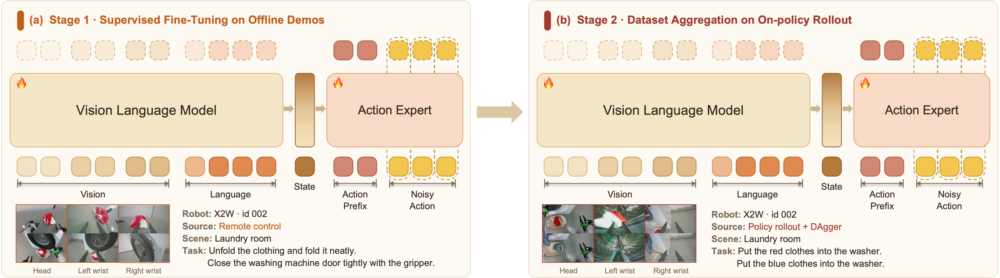
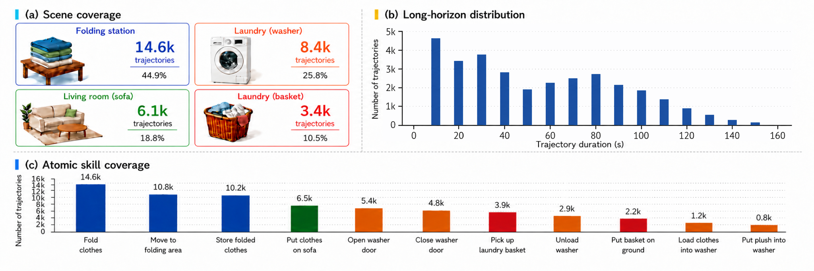

Scaling Bimanual Household Manipulation from 1,500 hours of Demonstrations to On-Policy Corrections
한 줄 요약 (TL;DR)
가사 양팔 조작(bimanual household manipulation, 두 팔을 협조 제어해 옷 개기·세탁기 여닫기 같은 집안일을 수행)을 위해 실기기 531.7시간 + UMI(사람 손에 든 그리퍼로 수집한 in-the-wild 데이터) 1,000시간 = 1,500시간의 데모를 공개하고, 그 위에 5B급 VLA(vision-language-action) XR-2를 학습. 학습은 두 단계로 나뉜다 — (Stage 1) 전문가 데모로 flow matching(무작위 노이즈에서 정답 액션 궤적으로 향하는 벡터장을 학습해 몇 스텝 만에 액션을 만드는 생성 방식) 학습, (Stage 2) 배치 도중 사람이 실패 시점에 개입해 정정한 DAgger(Dataset Aggregation, "정책이 방문한 상태 위에서 사람이 옳은 행동을 얹어 준" 온-폴리시 데이터) 데이터로 추가 학습. 옷 개기 태스크에서 전문가 데이터만으로 10h→120h에 성공률 34%→84%, DAgger 3라운드로 58%→93%(+35p)까지 계단식 상승. 다른 VLA와의 head-to-head 비교는 없고, "확장 축(축=데이터 종류)마다 얼마나 오르는가"를 격리 실험으로 보여준 스케일링 논문.
1배경 · 문제의식
가사 태스크에서 두 팔이 필요한 이유는 (a) 긴 시퀀스(예: 세탁기 열기 → 옷 꺼내기 → 개기), (b) 접촉이 많고 좌우 협조가 필수, (c) 물체·자세·조명 변동이 크기 때문이다. 최근 VLA 흐름(RT-2, π0, π0.5, RDT 등)이 "데이터를 늘리면 잘 된다"를 보였지만, 어떤 종류의 데이터를 얼마나 늘려야 하는지가 여전히 열린 문제다.
- 축 1 — 오프라인 전문가 데모: 사람 텔레옵으로 수집한 "성공하는 행동" 궤적. 스킬 커버리지를 넓히는 데 유리하지만, 롤아웃 시 실패 상태에서 어떻게 복구해야 하는지는 못 가르친다(distribution shift).
- 축 2 — 온-폴리시 정정(DAgger 계열): 현재 정책을 실제로 굴리다 실패하면 사람이 잡아 정정. 정책이 실제로 방문한 상태에 대한 라벨이므로 "몰라서 무너지는 상황"만 짚어서 배운다.
2핵심 Contribution
- 1,500시간 규모 이중 데이터셋 공개 — 실기기 X2W 플랫폼에서 32,518개 궤적·57.4M 프레임(531.7시간, 4개 가사 씬 · 11개 원자 스킬, 프레임 단위 언어 어노테이션)과, 200+ 가정·100+ 수집자에서 모은 UMI(Universal Manipulation Interface, 사람이 손에 든 그리퍼로 카메라·엔코더 없이 궤적을 수집하는 방식) ~1,000시간을 통합.
- XR-2: 5B 파라미터 VLA — Qwen3-VL-4B 백본 + 18-layer 액션 전문가(hidden 1024, 8 attention head, KV head 4개로 그룹화)로 구성된 Mixture-of-Transformers(백본과 액션 전문가가 층마다 cross-attention으로 얽혀 계산되는 구조). 액션은 conditional flow matching(CFM: 무작위 노이즈에서 정답 액션까지의 벡터장을 학습해 몇 스텝 오일러 적분으로 액션을 뽑는 생성 학습법)로 예측, K=50 chunk × 25-DoF를 5-step으로 생성 → 10Hz 비동기 추론(RTX 4090).
- 두 축의 스케일링 곡선 실증 — 전문가 데이터 10→120시간에 옷 개기 34%→84%(+50p, 120h에서 포화), 정책 롤아웃 중 실패마다 사람이 정정한 DAgger 3라운드로 58%→74%→82%→93%(누적 +35p). 실패 서브태스크에 예산을 몰아주는 failure-weighted 할당(α=1, wmin=0.05)과 궤적 단위 1:1 혼합이 핵심 레시피.
3Method
X2W 플랫폼과 25-DoF 액션 공간
X2W는 저자들의 실기기 플랫폼: 7-DoF 팔 × 2 + 1-DoF 그리퍼 × 2 + 4-DoF 허리 + 2-DoF 목 = 22 관절 위치 + 3-축 옴니휠 속도 = 25차원 액션. 관측은 머리 카메라(RealSense D435i·ZED X Mini·ZED-XONE GS) + 손목 카메라 2대 + 89차원 proprioception(joint pos/vel/torque, EE pose, wheel 정보 등, 모두 30Hz 동기화).
XR-2 구조 (VLM 백본 + Action Expert)
Conditional Flow Matching (CFM) 학습 목적함수
정답 액션 a와 노이즈 ε~N(0,I) 사이를 시간 t∈[0,1]로 선형 보간한 at = (1−t)ε + t·a를 만든 뒤, 정책 πθ가 노이즈에서 정답 쪽으로 향하는 방향 벡터를 예측하도록 학습.
여기서 o는 이미지 관측, s는 89-D proprioception, l은 언어 지시. t는 Beta(1.0, 1.5) 분포로 샘플링해 노이즈 근처(t≈0)를 상대적으로 자주 뽑는다.
직관: flow matching은 diffusion과 사촌뻘이지만, 노이즈→정답의 직선 경로를 직접 학습하므로 5스텝 Euler 적분으로도 좋은 액션이 나온다(diffusion처럼 수십~수백 스텝 필요 없음 → 10Hz 실시간 가능).
비동기 추론과 액션-프리픽스 조건화
정책은 10Hz로 액션 청크를 뽑고, 저수준 컨트롤러가 그것을 30Hz 관절 명령으로 보간, 최종 서보는 1000Hz. 다음 청크 예측이 도착하기 전에 현재 청크의 앞부분이 이미 실행되는 상황을 위해, 다음 청크는 앞으로 실행될 프리픽스 액션을 조건으로 받는다(dynamic delay 계산). 이 방식이 5B 모델을 실기기에 실시간으로 얹는 열쇠.
데이터 파이프라인과 UMI
실기기 데이터는 VR 텔레옵으로 표준화된 SOP 하에 수집. UMI는 인코더 없는 기계식 그리퍼를 사람이 손으로 들고, 손목-마운트 스테레오 에고 카메라(960×960 @ 30Hz)만으로 궤적을 수집 — 로봇 없이 200+ 가정에서 5,000+ 벌의 옷을 대상으로 데이터를 확장한다. 자동 후처리 + VLM 어노테이션 + 수동 검토를 거쳐 스킬 라벨과 프레임 단위 언어를 붙인다.
DAgger 라운드 프로토콜과 failure-weighted 예산 배분
텔레옵 오퍼레이터가 정책 롤아웃을 지켜보다 실패 시점에 제어를 뺏어(intervention) 성공 궤적으로 되돌려 놓고 다시 정책에게 넘긴다. 개입 구간이 자동 라벨되어 곧바로 DAgger 데이터가 된다.
wi = wmin + (1 − N·wmin) · (1 − si + ε)α / Σj (1 − sj + ε)α
si는 서브태스크 i의 현재 성공률, N은 서브태스크 수. 하이퍼파라미터: α=1(실패에 얼마나 예리하게 반응할지), ε=0.05, wmin=0.05(가장 잘 되는 서브태스크도 최소 5%는 확보 → catastrophic forgetting 방지).
혼합 비율은 궤적 단위 1:1로 DAgger : 전문가를 섞는다(프레임 단위가 아니라 궤적 통째로 뽑아 스킬·씬 분포를 보존).
각 라운드는 2.5 에폭씩 학습한 뒤 다시 롤아웃 → 정정 수집 → 재학습을 반복.
4실험 결과
평가 프로토콜
대표 태스크는 옷 개기(clothes folding). 재질·크기·색깔·초기 로봇 위치가 다른 홀드아웃 세트에서 성공률을 측정. 논문 명시: "일반화 조건에서 85%인 모델은 in-distribution 조건에서 >95%"이므로 아래 수치는 어려운 쪽 값.
축 1 — 전문가 데이터 스케일링 (옷 개기)
| 전문가 시간 | 10 h | 30 h | 120 h | 160 h |
|---|---|---|---|---|
| 성공률 | 34% | 34% | 84% | 82% |
30h → 120h 구간에서 +50%p의 상전이. 160h에선 소폭 감소(오버핏 또는 분산 잡음)로 ~120h에서 포화. "일단 어느 문턱을 넘기 전까진 데이터가 늘어도 안 뛰다가, 넘으면 확 뛰는" 패턴.
축 2 — DAgger 라운드 스케일링 (옷 개기)
| 라운드 | 0 (전문가 only) | 1 | 2 | 3 |
|---|---|---|---|---|
| 성공률 | 58% | 74% | 82% | 93% |
| Δ vs 이전 | — | +16p | +8p | +11p |
누적 +35p. 축 1에서 포화된 이후에도 축 2로 계속 오르는 것이 논문의 핵심 메시지 — "성공하는 궤적을 더 모으는 것"과 "실패 시점에서 정정하는 것"은 서로 다른 신호를 준다.
5Ablation (실제로 변화시킨 요소)
- 전문가 데이터 시간(10→160 h) 스윕 — 위 축 1.
- DAgger 라운드 수(0→3) 스윕 — 위 축 2. "실패한 서브태스크에 예산 몰기"의 효과는 라운드가 진행돼도 성공률이 계속 오른다는 사실로 뒷받침.
- 혼합 방식 — 궤적 단위 1:1 vs 프레임 단위 혼합은 정성적으로 논의(궤적 단위가 스킬·씬 분포를 보존해 유리)되었지만, 별도 수치 ablation 표는 없다.
- α, wmin, ε — 명시된 값(α=1, wmin=0.05, ε=0.05)에 대한 개별 sensitivity 실험은 논문에 실려 있지 않다.
전통적 "컴포넌트 제거" 스타일 ablation은 없다. 대신 두 스케일링 축이 곧 실질 ablation 역할을 한다.
6핵심 Figure / Table



7관련 링크
Q추가 질문 & 답변
아직 추가 질문이 없습니다. 이 논문에 대해 더 궁금한 점을 물어보시면 답변을 여기에 정리해 추가합니다.